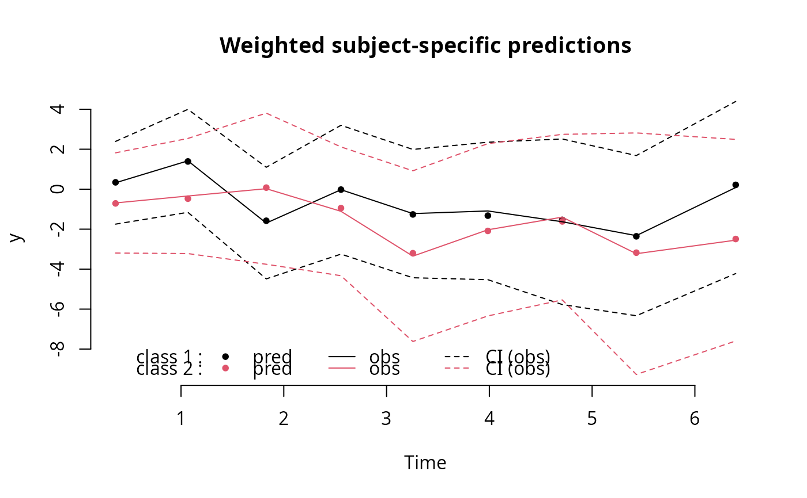

This function produces different plots (residuals, goodness-of-fit, estimated link functions, estimated baseline risk/survival and posterior probabilities distributions) of a fitted object of class hlme, lcmm, multlcmm or Jointlcmm.
Usage
# S3 method for class 'hlme'
plot(x, which = "residuals", var.time, break.times, marg, subset, shades, ...)
# S3 method for class 'lcmm'
plot(x, which = "residuals", var.time, break.times, marg, subset, shades, ...)
# S3 method for class 'multlcmm'
plot(
x,
which = "residuals",
var.time,
break.times,
marg,
outcome,
subset,
shades,
...
)
# S3 method for class 'Jointlcmm'
plot(
x,
which = "residuals",
var.time,
break.times,
marg,
event,
subset,
shades,
...
)
# S3 method for class 'mpjlcmm'
plot(x, which, event, ...)
# S3 method for class 'externSurv'
plot(x, which = "hazard", event, ...)
# S3 method for class 'externX'
plot(x, which = "postprob", event, ...)Arguments
- x
an object inheriting from classes
hlme,lcmm,multlcmmorJointlcmm, representing respectively a fitted latent class linear mixed model, a more general latent class mixed model or a joint latent class model- which
a character string indicating the type of plot to produce. For
hlmeobjects, are available "residuals", "postprob","fit". Forlcmmandmultlcmmobjects, are available "residuals", "postprob", "link", "linkfunction", "fit". ForJointlcmmobjects, are avaiable "residuals", "postprob", "link", "linkfunction", "fit", "hazard", "baselinerisk", "survival". Default to "residuals"- var.time
for
which="fit"only, a character string containing the name of the variable that corresponds to time in the longitudinal model.- break.times
for
which="fit"only, either a numeric vector containing the cuts-off defining the time-intervals or an integer giving the number of cut-offs. In the latter case, the cut-offs are placed at the quantiles of the observed times distribution.- marg
for
which="fit"only, a logical indicating the type of prediction. Ifmarg=TRUE(the default), the marginal predictions are provided. Ifmarg=FALSE, the subject-specific predictions are provided.- subset
for
which="fit"only, a subset of the data used to estimate the model, defining the data on which the fit is evaluated. By default, all the data are used.- shades
logical indicating if confidence intervals should be represented with shades. Default to FALSE, confidence intervals are represented as dotted lines.
- ...
other parameters to be passed through to plotting functions. This includes graphical parameters described in par function and further arguments legend (character or expression to appear in the legend. If no legend should be added,
"legend"should be NULL. ), legend.loc (keyword for the position of the legend from the list"bottomright","bottom","bottomleft","left","topleft","top","topright","right"and"center". By default, the legend is located in the top left of the plot. ) and add (logical indicating if the curves should be added to an existing plot. Default to FALSE.).- outcome
for
which="fit"andmultlcmmobjects only, the outcome to consider.- event
for
which="baselinerisk"orwhich="hazard"only, an integer corresponding to the numeric code (in the indicator variable) of the event for which the baseline risk functions are to be plotted. By default, the first event is considered.
Details
With which="residuals", this function provides the marginal residuals
against the marginal predictions, the subject-specific residuals against the
subject-specific predictions, a normal QQ-plot with confidence bands for the
marginal residuals and a normal QQ-plot with confidence bands for the
subject-specific residuals.
With which="postprob", the function provides the histograms of the
posterior class-membership probabilities stemmed from a Jointlcmm,
lcmm, hlme or multlcmm object.
With which="link" or which="linkfunction", the function
displays the estimated transformation(s) specified in the option link
of lcmm and multlcmm functions. It corresponds to the
(non)linear parameterized link estimated between the oberved longitudinal
outcome and the underlying latent process.
With which="fit", the function provides the class-specific weighted
marginal and subject-specific mean predicted trajectories with time and the
class-specific weighted mean observed trajectories and their 95% confidence
bounds. The predicted and observed class-specific values are weighted means
within each time interval; For each observation or prediction (in the
transformed scale if appropriate), the weights are the class-specific
(posterior with subject-specific or marginal otherwise) probabilities to
belong to the latent class.
With which="baselinerisk" or which="hazard", the function
displays the estimated baseline risk functions for the time-to-event of
interest in each latent class.
With which="survival", the function displays the estimated event-free
probabilities (survival functions) for the time-to-event of interest in each
latent class.
Examples
###################### fit, residuals and postprob
# estimation of the model
m<-lcmm(Y~Time*X1,mixture=~Time,random=~Time,classmb=~X2+X3,
subject='ID',ng=2,data=data_hlme,B=c(0.41,0.55,-0.18,-0.41,
-14.26,-0.34,1.33,13.51,24.65,2.98,1.18,26.26,0.97))
# fit
plot(m,which="fit",marg=FALSE,var.time="Time",bty="n")

# residuals plot
plot(m)
# postprob plot
plot(m,which="postprob")
###################### fit, linkfunctions
#### Estimation of homogeneous mixed models with different assumed link
#### functions, a quadratic mean trajectory for the latent process with
#### independent random intercept, slope and quadratic slope
#### (comparison of linear, Beta and 3 and 5 splines link functions)
if (FALSE) { # \dontrun{
# linear link function
m10<-lcmm(Ydep2~Time+I(Time^2),random=~Time+I(Time^2),subject='ID',ng=1,
data=data_lcmm,link="linear",
B=c(-0.7454, -0.2031, 0.2715, 0.2916 , 0.6114, -0.0064, 0.0545,
0.0128, 25.3795, 2.2371))
# Beta link function
m11<-lcmm(Ydep2~Time+I(Time^2),random=~Time+I(Time^2),subject='ID',ng=1,
data=data_lcmm,link="beta",B=c(-0.9109, -0.0831, 0.5194, 0.1910 ,
0.8984, -0.0179, -0.0636, 0.0045, 0.5514, -0.7692, 0.7037, 0.0899))
# fit
par(mfrow=c(2,1),mar=c(4,4,1,1))
plot(m11,which="fit",var.time="Time",bty="l",ylim=c(-3,0))
plot(m11,which="fit",var.time="Time",marg=FALSE,bty="l",ylim=c(-3,0))
# I-splines with 3 equidistant nodes
m12<-lcmm(Ydep2~Time+I(Time^2),random=~Time+I(Time^2),subject='ID',ng=1,
data=data_lcmm,link="3-equi-splines",B=c(-0.9272, -0.0753 , 0.5304,
0.1950, 0.9260, -0.0204, -0.0739 , 0.0059, -7.8369, 0.9228 ,-1.4689,
2.0396, 1.8102))
# I-splines with 5 nodes, and interior nodes entered manually
m13<-lcmm(Ydep2~Time+I(Time^2),random=~Time+I(Time^2),subject='ID',ng=1,
data=data_lcmm,link="5-manual-splines",intnodes=c(10,20,25),
B=c(-0.9315, -0.0739 , 0.5254 , 0.1933, 0.9418, -0.0206, -0.0776,
0.0064, -7.8645, 0.7470, 1.2080, 1.5537 , 1.7558 , 1.3386 , 1.0982))
# Plot of estimated different link functions:
# (applicable for models that only differ in the "link function" used.
# Otherwise, the latent process scale is different and a rescaling
# is necessary)
plot(m10,which="linkfunction",bty="l")
plot(m11,which="linkfunction",bty="l",add=TRUE,col=2)
plot(m12,which="linkfunction",bty="l",add=TRUE,col=3)
plot(m13,which="linkfunction",bty="l",add=TRUE,col=4)
legend("topleft",legend=c("linear","beta","3-Isplines","5-Isplines"),
col=1:4,lty=1,bty='n')
} # }
###################### fit, baselinerisk and survival
if (FALSE) { # \dontrun{
#### estimation with 3 latent classes (ng=3) - see Jointlcmm
#### help for details on the model
m3 <- Jointlcmm(fixed= Ydep1~Time*X1,mixture=~Time,random=~Time,
classmb=~X3,subject='ID',survival = Surv(Tevent,Event)~ X1+mixture(X2),
hazard="3-quant-splines",hazardtype="PH",ng=3,data=data_lcmm,
B=c(0.7576, 0.4095, -0.8232, -0.2737, 0, 0, 0, 0.2838, -0.6338,
2.6324, 5.3963, -0.0273, 1.3979, 0.8168, -15.041, 10.164, 10.2394,
11.5109, -2.6219, -0.4553, -0.6055, 1.473, -0.0383, 0.8512, 0.0389,
0.2624, 1.4982))
# fit
plot(m3,which="fit",var.time="Time",bty="l")
plot(m3,which="fit",var.time="Time",marg=FALSE,bty="l",ylim=c(0,15))
# Class-specific predicted baseline risk & survival functions in the
# 3-class model retained (for the reference value of the covariates)
plot(m3,which="baselinerisk",bty="l")
plot(m3,which="baselinerisk",ylim=c(0,5),bty="l")
plot(m3,which="survival",bty="l")
} # }